电力
电力以 Forge Energy（FE）为单位，沿着电缆流动：从产生电力的方块流向储存或使用电力的方块，也流向其他模组中任何接收 FE 的方块。
燃烧发电机烧熔炉能烧的东西。

电缆把电力引出去。

接在电缆上的储能单元存下暂时用不上的电力。

接在电缆上的冶炼炉用送来的电力工作。

发电
燃烧发电机烧熔炉能烧的东西，燃烧时每刻发电 80 FE。燃料在这里烧的时间是熔炉里的一半，所以一块煤发电 64,000 FE。它只在还装得下所发电力时燃烧，自身能存 32,000 FE。
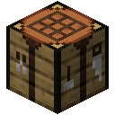
合成
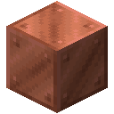

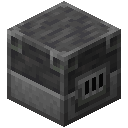

蒸汽
锅炉旁边有水时，为叠在它上面的涡轮产生蒸汽，最多四台。每台涡轮每刻发电 240 FE，锅炉为每台烧掉一刻熔炉燃料，所以一块煤发电 384,000 FE，不管有几台：是燃烧发电机的六倍。涡轮多只是烧得更快。电力从锅炉和涡轮都能引出，燃烧时它们会旋转并放出蒸汽。
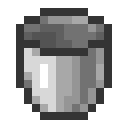
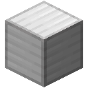

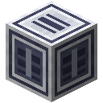
太阳
太阳能板在明亮的天空下每刻发电 40 FE，天色因夜晚或下雨变暗时发得少，在黑暗中或屋顶下不发电。它运行不花钱。相互贴着的面板共用一个电网，不用电缆，储能单元帮它们撑过夜晚。
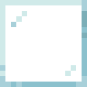


反应堆
最大的电力来自反应堆，而只有模型才能运行它。
输送与储存
电缆把发电机、储能单元和机器连成一个电网。每一刻，机器先从发电机、再从储能单元取得所需的电力；发电机多发的电力给储能单元充电。所有电力都走电缆，而一个电网每刻输送的不会超过它最细的那根电缆：一根细缆会拖住整条线。相互贴着的方块不需要电缆，也不受限制。
| 电缆 | 每刻输送 |
|---|---|
| 电缆 | 3,200 FE |
| 重型线缆 | 51,200 FE |
| 母线 | 819,200 FE |
电网输送电力时，电流会化作光脉冲沿电缆奔跑。
储能单元能存 1,000,000 FE，每刻进出各最多 2,000 FE；电容组能存 64,000,000 FE，每刻进出各最多 64,000 FE。它们充电时各面按四分之一逐格亮起，旁边的比较器能读出有多满。

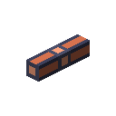

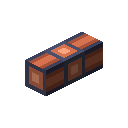

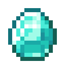
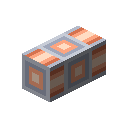
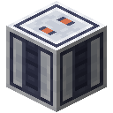

冶炼炉
冶炼炉能冶炼熔炉能冶炼的一切，用每刻 80 FE 的电力代替燃料，每五秒炼好一件。一份矿石或粗矿，它炼出的是熔炉的两倍。制造机用 Transformer 光掩模制造它。
控制器
在冶炼炉的控制器槽放入一个模型，每份矿石就成了一次它要保持在温区内的熔炼：每四刻查看一次，它问模型该给熔炼降温、保温还是加热，并等模型回答。在温区内保持了至少 90% 查看次数的熔炼，出三个锭而不是两个；模型要在测试的每种矿石上都保住十次中的九次熔炼，才能通过控制测试。这个槽在冶炼炉界面旁的面板里；界面上矿石和锭之间逐次画出这次熔炼，温区用阴影标出，指向它可以看到上一次熔炼保持了多少。模型在工艺数据集上学这件事：见模型与测试。
通过「精准」的控制器不再把熔炼保持在区间里，而是保持在其中一格；70% 的查看落在这一格的熔炼出六块。没有数据集能教这个：见调校。同时通过「算账」的控制器，每次这样的熔炼后会拿到一份化验，一行要相加的数，算对了这次熔炼就出九块：见多想想。
其他方块
漏斗和端口可以从任何一面给发电机和冶炼炉送料，并把冶炼炉炼好的锭取走。其他模组的电缆可以从发电机、储能单元和反应堆取电，也可以给储能单元、冷水机和冶炼炉送电。
算力也要用电，前几个加速器除外：见算力。
一台燃烧发电机，正在燃烧。
电缆把它们连起来。
一个储能单元，充到四分之三。
一台冶炼炉，用它的电力工作。
张量机壳铜块铁锭高炉红石块燃烧发电机铁桶铁块锅炉涡轮玻璃板晶圆铜锭太阳能板红石粉电缆金锭重型线缆金块钻石母线储能单元电容组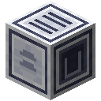